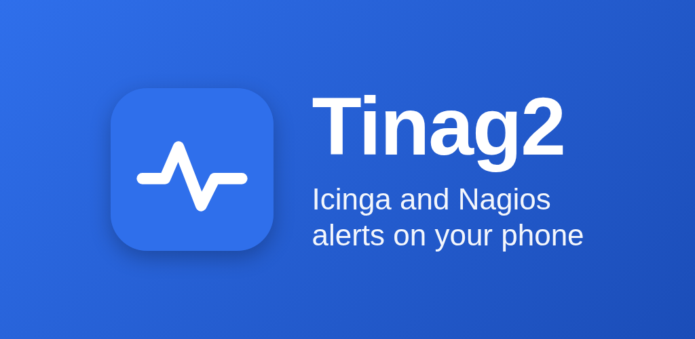
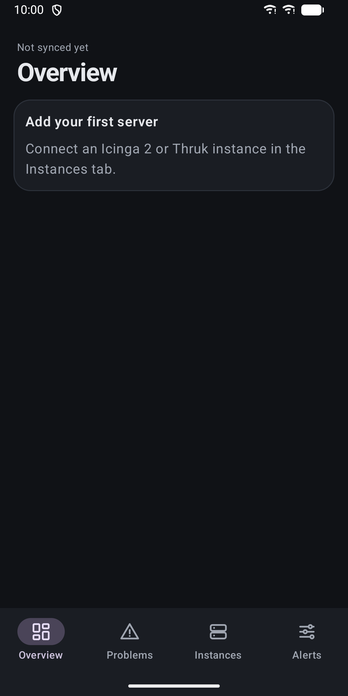
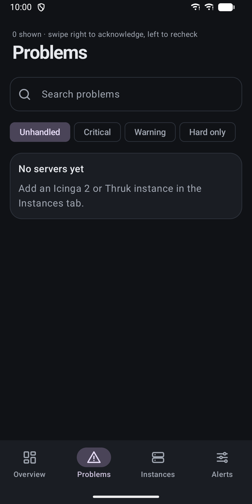
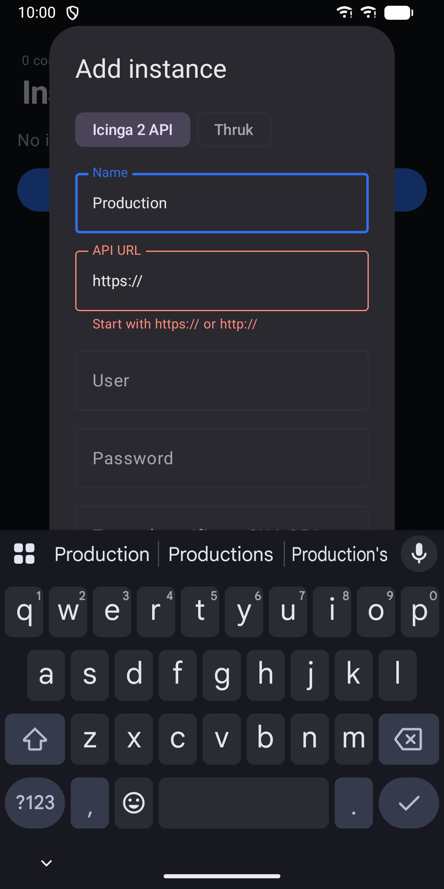
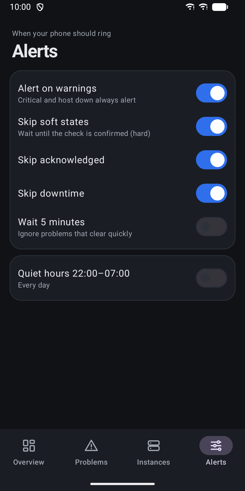

Tinag2: Icinga & Nagios Alerts
Watch Icinga 2 and Nagios problems, acknowledge them and get alerts.





About
Tinag2 is an Android client for Icinga 2 and Nagios/Naemon (through Thruk). See what is broken, act on it and get notified, right from your phone. Connect your own monitoring servers. Add as many as you need; they are fetched in parallel. The app talks only to the servers you enter. There is no account and no developer server. OVERVIEW - Counts of critical, warning and unknown problems and hosts that are down - A "Needs you now" card for unhandled problems - Service health bar and a card for each server - Shows how old the data is, and keeps the last good data when a server cannot be reached PROBLEMS - One list sorted by urgency: unhandled first, worst state first, oldest first - Filters for unhandled, critical, warning and hard states - Search by text or regular expression - Services on a host that is down are hidden by default - Acknowledged and downtime problems are shown muted - Swipe right to acknowledge, swipe left to recheck. The same actions are available as accessibility actions. - Detail view with state, check attempts, output, last and next check - Set a one hour downtime ALERTS - Notifies only about new problems or problems that got worse - The notification is removed when the problem recovers or is handled - Rules: warnings on or off, skip soft states, skip acknowledged, skip downtime, wait 5 minutes before alerting - Quiet hours from 22:00 to 07:00, with an option to let critical alerts through - Separate notification channels for critical and host down, warnings, unknown and connection problems - Acknowledge directly from the notification WIDGETS - A counts widget with critical, warning and unknown numbers - A list widget with the most urgent unhandled problems CONNECTION AND SECURITY - Icinga 2 REST API and Thruk REST API - HTTP basic authentication - Optional pinning of a server's certificate fingerprint, for self-signed servers - Passwords are encrypted with the Android Keystore - Plain HTTP is allowed for local networks, and the app warns you when you use it - No ads, no analytics, no tracking DETAILS - Background sync every 15 minutes, plus pull to refresh - Light and dark theme that follows the system - Phone layout with bottom navigation, and a list and detail layout on tablets Tinag2 needs an Icinga 2 or Thruk server that you can reach from your phone.